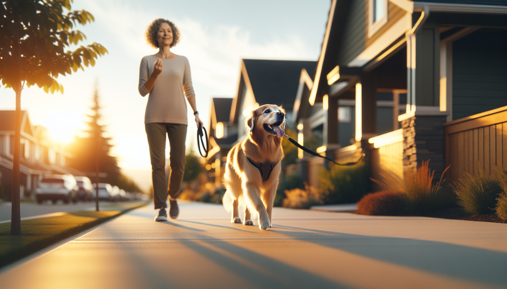

If every walk feels like a tug-of-war, you are not alone. Leash pulling is one of the most common challenges dog owners face, especially with energetic puppies, newly adopted rescue dogs, and strong adult dogs who have learned that pulling gets them where they want to go. The good news is that leash pulling can be improved with the right approach.
To stop your dog from pulling on the leash, the goal is not to force your dog into position. It is to teach them that walking near you is rewarding, safe, and more effective than dragging you down the street. Science-backed, reward-based training works because it changes the behavior at the source: your dog’s learning history and emotional state.
In this guide, you will learn why dogs pull, what equipment helps, and exactly how to train loose-leash walking step by step. Whether you are working with a young puppy, an excitable adolescent, or a rescue dog still adjusting to the world, these methods can help make walks calmer and more enjoyable for both of you.
Dogs are not trying to be stubborn or dominant when they pull. Most pull because it works. When a dog leans forward and the walk continues, they learn that tension on the leash helps them move toward smells, people, dogs, and exciting places. From your dog’s perspective, pulling has been reinforced.
There are also a few very normal reasons dogs pull:
This matters because the solution depends on understanding the cause. A dog who pulls from excitement may need impulse control and engagement. A dog who pulls from fear may need distance, confidence-building, and slower exposure to triggers. Training works best when it is tailored to the dog in front of you.
Training is easier when your equipment supports good habits. While no tool replaces training, the right setup can give you more control and reduce strain on your dog’s body.
Helpful leash-walking equipment includes:
It is best to avoid equipment that relies on pain, fear, or discomfort, such as choke chains, prong collars, or shock collars. These may suppress behavior temporarily, but they do not teach the dog what to do instead. They can also increase stress, frustration, and negative associations with walks.
One of the biggest mistakes owners make is trying to teach leash manners in the most distracting environment possible. If your dog cannot focus in the living room, they are unlikely to succeed on a busy sidewalk. Start where your dog can win.
Begin indoors or in a quiet yard with your dog on leash. Have treats ready. Stand still and wait for your dog to orient toward you. The moment they are near your side or the leash becomes loose, mark that moment with a cheerful word like “yes” and give a treat. Then take one or two steps. If your dog stays with you on a loose leash, mark and reward again.
Your early goal is simple: teach your dog that being close to you and keeping slack in the leash makes good things happen. Keep sessions short and successful.
Focus on these skills first:
Think of this stage as building a strong foundation. The more reinforcement history your dog has for walking near you in easy settings, the easier it will be to transfer that behavior outdoors.
Once your dog understands the basics in low-distraction settings, you can begin practicing on actual walks. The key is consistency. If pulling still gets your dog where they want to go sometimes, the behavior will be harder to change.
Here are the most effective positive training methods:
These methods work because they remove the payoff for pulling and create a new payoff for staying connected to you. Your dog learns, step by step, that a loose leash makes the walk continue.
Not all pulling is just a training issue. Many dogs pull because they are over threshold, meaning they are too excited, stressed, or anxious to think clearly. This is especially common in rescue dogs adjusting to a new home, adolescent dogs with big feelings, and puppies discovering the world.
If your dog pulls hardest near other dogs, people, traffic, squirrels, or new environments, slow the process down. Create more distance from triggers and work where your dog can still take treats and respond to you. Reward calm check-ins and gradually build focus.
Helpful strategies include:
For fearful or reactive dogs, leash pulling may be part of a bigger behavior picture. In those cases, it is worth working with a qualified force-free trainer or behavior professional who can help you create a safe, structured plan.
Loose-leash walking takes practice, and it is normal to hit bumps along the way. If progress feels slow, one of these common mistakes may be getting in the way:
Remember that improvement is rarely linear. Some days will feel easy, and others will feel messy. What matters most is that your dog is learning over time.
This depends on your dog’s age, history, environment, and how consistently you practice. Some dogs show improvement within a few days of clear, reward-based training. For others, especially dogs with a long history of pulling or high arousal outdoors, it may take several weeks or longer to build reliable habits.
The best way to speed up progress is to set your dog up for success:
If you stay patient and consistent, your dog will begin to understand the pattern. Walks become less about conflict and more about communication.
If you want to know how to stop your dog from pulling on the leash, the answer is simple but powerful: teach, reinforce, and manage the environment so your dog can succeed. Pulling is not a character flaw. It is a learned behavior shaped by excitement, habit, and opportunity. With positive training, you can replace it with a calmer, more connected walking style.
Start in easy places. Reward generously. Stop letting pulling pay off. And remember that your dog is learning every time you clip on the leash. With practice, your walks can become less stressful and far more enjoyable.
Get our full Dog Training eBook series — new titles added weekly.